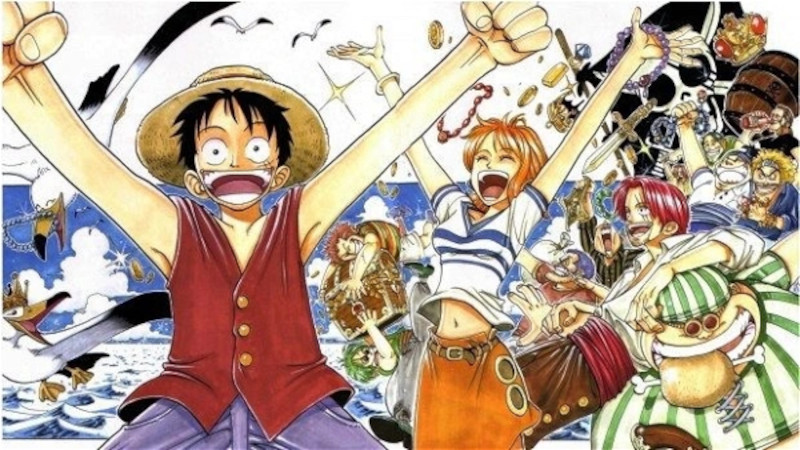
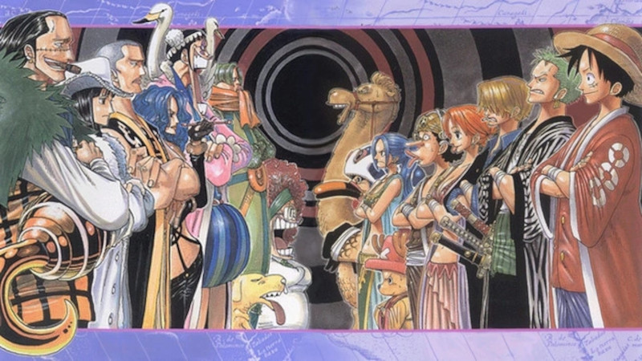
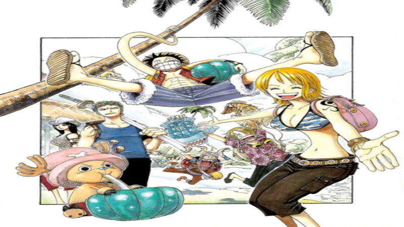
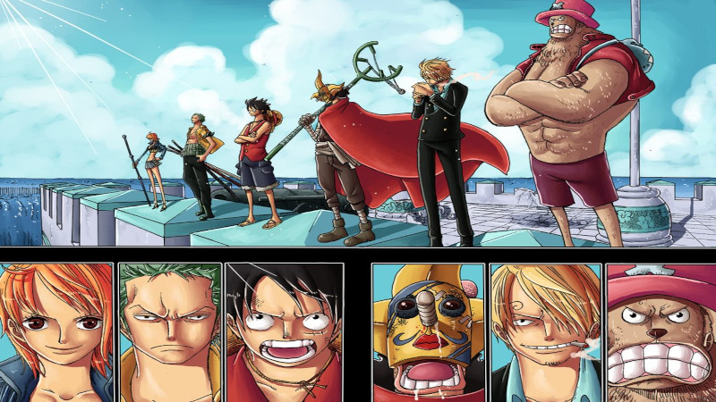
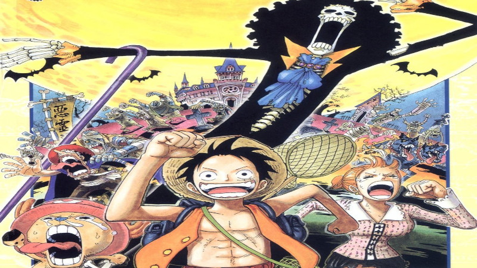
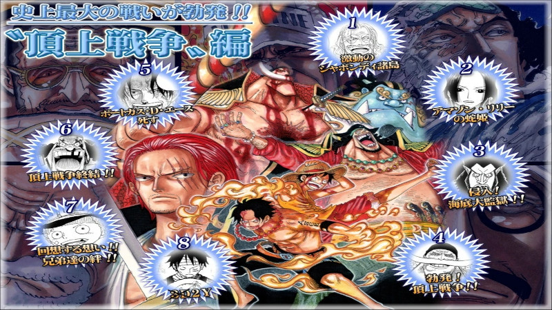
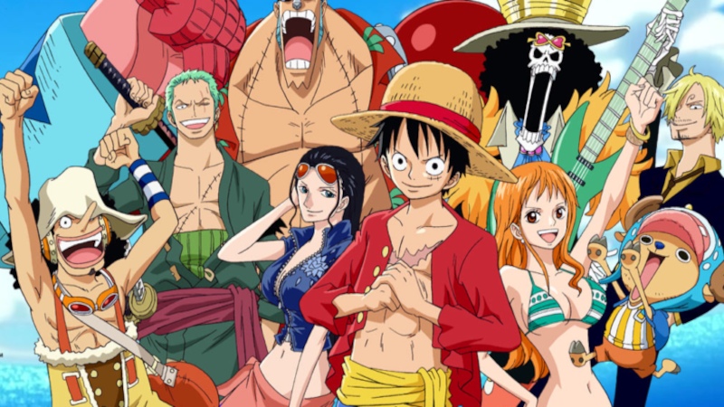
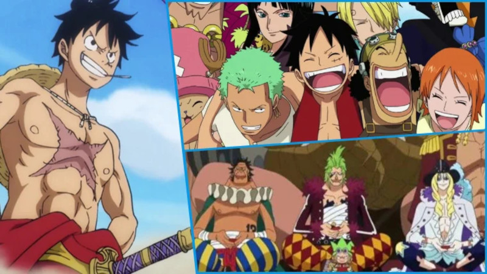
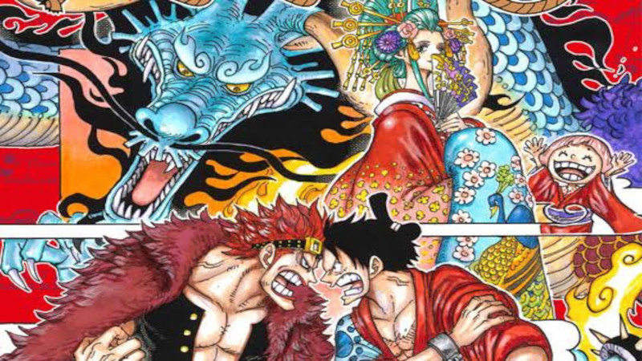

História
One Piece é uma série de mangá escrita e ilustrada por Eiichiro Oda. Os capítulos têm sido serializados na revista Weekly Shōnen Jump desde 22 de julho de 1997, com os capítulos compilados e publicados em mais de 100 volumes pela editora Shueisha até atulamente no ano de 2022. Monkey D. Luffy, um jovem cujo corpo ganhou as propriedades de borracha após ter comido uma fruta do diabo acidentalmente. Com sua tripulação, os Piratas do Chapéu de Palha, Luffy explora a Grand Line em busca do tesouro mais procurado do mundo, o "One Piece", a fim de se tornar o próximo Rei dos Piratas.
Volumes e Capítulos
- East Blue /Capitulos - (001-100) Volume (1-12) 
- Alabasta/ Capítulos - (101-217) Volume (12-24) 
- Skypiea /Capítulos - (218-302) Volume (24-32) 
- Water 7 /Capítulos - (303-441) Volume (32-46) 
- Thriller Bark /Capítulos - (442-489) Volume - (46-50) 
- Guerra dos Maiorais /Capítulos - (490-597) Volume - (50-61) 
- Ilhas dos Homems Peixes /Capítulos - (598-653) Volume - () 
- Punk Hazard /Capítulos - (654-699) Volume - (66-70)
- Dressrosa /Capítulos - (700-801) Volume - (70-80) 
- Zou /Capítulos - (802-824) Volume - (80-82)
- Ilha Whole Cake /Capítulos - (825-902) Volume - (82-90)
- Devaneio /Capítulos - (903-909) Volume - (90)
- País de Wano /Capítulos - (910-atual) Volume - (90-atual) 